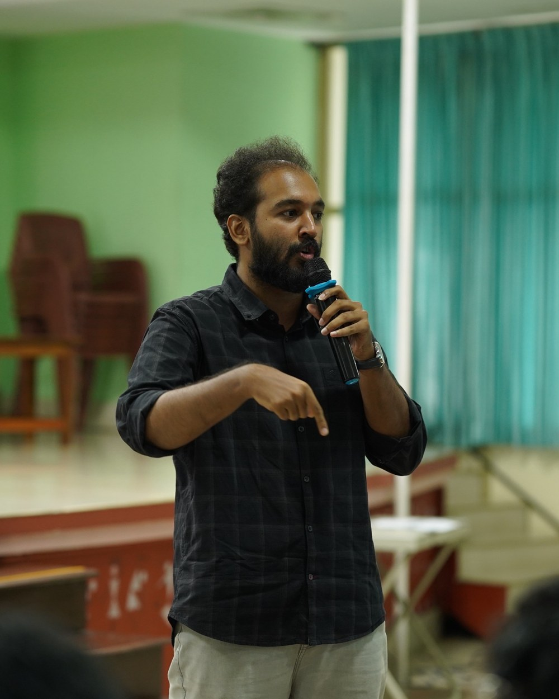
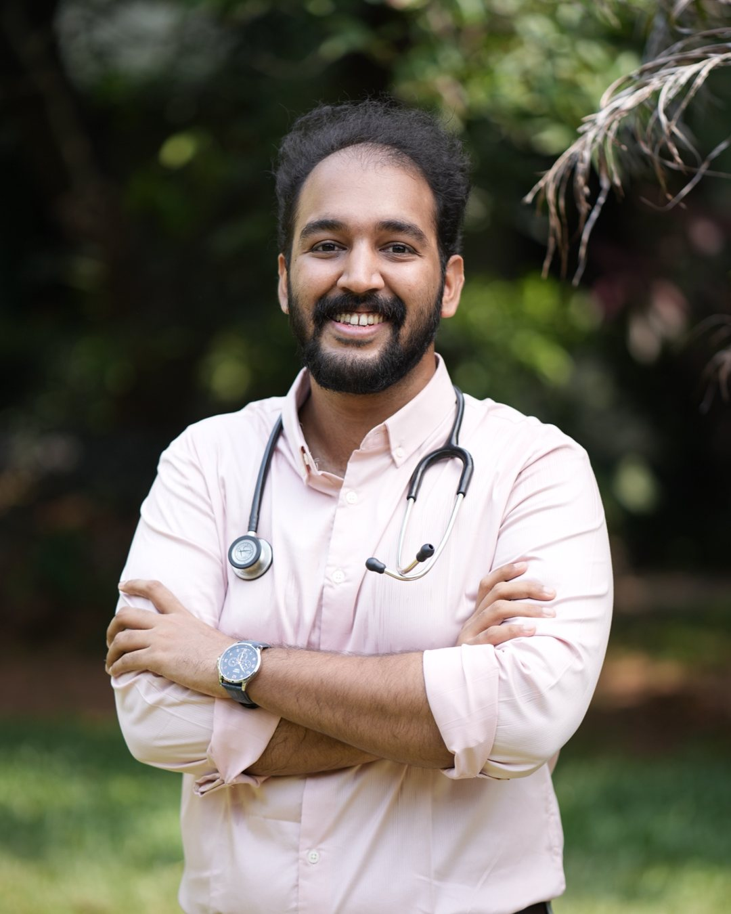

Medical college is more than a training ground for doctors.
How to read this series
■ Red a critique■ Black an insight■ Blue the evidence
On medical education, from a house surgeon’s lens.

MedX Talks · 25 Oct 2026
Dr. Sidharth Narayanan· House Surgeon, GMC Kozhikode
01 / 13
Before I Leave Medical College · 001The premise
MBBS is the foundation of every doctor’s career. Right now, it feels undervalued.
This series starts there: bringing value back to undergraduate medical education.
Fig. 0 — Clinical practice rests on it, and so does everything else a doctor may choose to build.
Dr. Sidharth Narayanan· House Surgeon, GMC Kozhikode
02 / 13
Before I Leave Medical College · 001The question
?
We train doctors. But is that all a medical college should aspire to do?
A reflection from within medical education.
Dr. Sidharth Narayanan· House Surgeon, GMC Kozhikode
03 / 13
Before I Leave Medical College · 001Fig. 1
Are we getting the most out of undergraduate medical education?
Fig. 1 — The undergraduate timetable (illustrative). What fills the empty cell?
Dr. Sidharth Narayanan· House Surgeon, GMC Kozhikode
04 / 13
Before I Leave Medical College · 001Fig. 2
Has MBBS become a stepping stone to NEET-PG?
…rather than an experience students fully value in itself.
Fig. 2 — The step, and the staircase beyond it.
Dr. Sidharth Narayanan· House Surgeon, GMC Kozhikode
05 / 13
Before I Leave Medical College · 001Fig. 3
Students see clinical problems every day. What happens to the solutions they imagine?
Fig. 3 — From clinical observation to validation.
Dr. Sidharth Narayanan· House Surgeon, GMC Kozhikode
06 / 13
Before I Leave Medical College · 001Fig. 4
Clinical understanding needs to meet engineering expertise.
Fig. 4 — Where the pieces overlap.
Dr. Sidharth Narayanan· House Surgeon, GMC Kozhikode
07 / 13
Before I Leave Medical College · 001Fig. 5
Technology institutions are building bridges towards medicine. What about the other direction?
Sources: IIT Madras, Department of Medical Sciences and Technology and its BS in Medical Sciences and Engineering · IIT Kharagpur, School of Medical Science and Technology · IIT Kanpur, Gangwal School of Medical Sciences and Technology.
Dr. Sidharth Narayanan· House Surgeon, GMC Kozhikode
08 / 13
Before I Leave Medical College · 001The proposal
Not another compulsory subject.
An environment that makes research and innovation possible, for students who want to explore.
Dr. Sidharth Narayanan· House Surgeon, GMC Kozhikode
09 / 13
Before I Leave Medical College · 001Fig. 6
A medical student with the people and tools to try.
Fig. 6 — What the environment could offer.
Dr. Sidharth Narayanan· House Surgeon, GMC Kozhikode
10 / 13
Before I Leave Medical College · 001Fig. 7
What medical college builds can be applied far beyond the clinic.
What training builds
Working under pressure
Deciding with incomplete information
Managing competing responsibilities
Working within resource limits
Where it can apply
Healthcare research
Product development
Entrepreneurship
Healthcare operations
Fig. 7 — Skills built in training, and where else they can go.
Dr. Sidharth Narayanan· House Surgeon, GMC Kozhikode
11 / 13
Before I Leave Medical College · 001The bigger vision
Two things, together.
1
Improve the education we provide.
2
Expand what medical education can enable.
Dr. Sidharth Narayanan· House Surgeon, GMC Kozhikode
12 / 13
Before I Leave Medical College · 001Article 001
A medical college should be more than a place where we learn medicine. It should be a place where we learn what we can do with it.

Dr. Sidharth Narayanan
House Surgeon, GMC Kozhikode 290+ days into internship
Read the full article
medinn.in/bilmc/more-than-a-training-ground
Dr. Sidharth Narayanan· House Surgeon, GMC Kozhikode